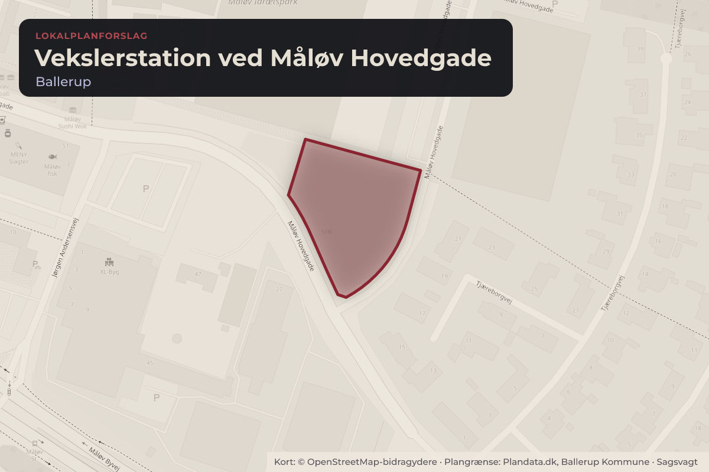
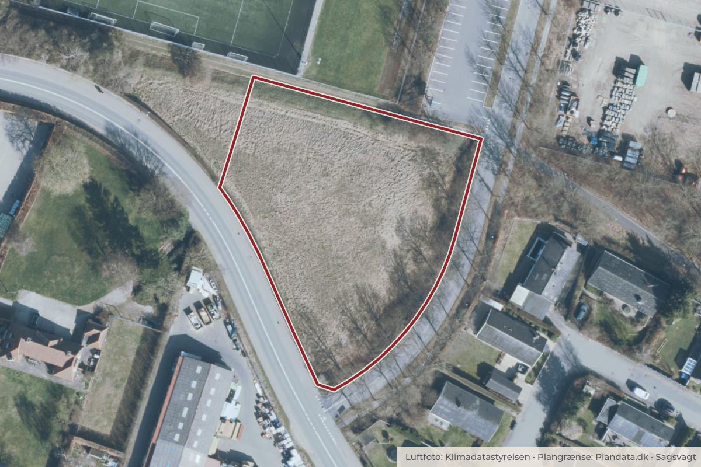

Besluttet 8. september, Klima- og Miljøudvalget, Ballerup
Forslag til Lokalplan 213 for en vekslerstation ved Måløv Hovedgade samt Kommuneplantillæg
Center for By og Miljø indstiller, at 1. Forslag til Kommuneplantillæg 4 godkendes med henblik på at blive sendt i offentlig høring i 4 uger. 2. Forslag til Lokalplan 213 for en vekslerstation ved Måløv Hovedgade godkendes med henblik på at blive sendt i offentlig høring i 4 uger.

Kort: © OpenStreetMap-bidragydere. Plangrænse: Plandata.dk, Ballerup Kommune.

Har du et billede fra Vekslerstation ved Måløv Hovedgade? Send det til os
Kort fortalt
- Hvem
- Klima- og Miljøudvalget, Ballerup Kommune
- Hvornår
- Tirsdag 8. september 2026
- Status
- Besluttet. Godkendt.
Hvad kan du gøre?
- Hold øje med høringen
- Forslaget lægger op til en offentlig høring. Når den åbner, kan alle sende et høringssvar på ballerup.dk.
Læs hele sagen Kommunens egen tekst
Baggrund
Som led i udrulningen af fjernvarme i Ballerup, skal Vestforbrænding placere vekslerstationer
flere steder i kommunen. Vekslerstationerne er nødvendige for at omstille tryk og temperatur
i de store hovedledninger til et niveau, der er tilpasset ledningerne til de private boliger.
Desuden er de med til at minimere varmetabet. I Måløv er den mest hensigtsmæssige
placering af en vekslerstation på den ledige, kommunale grund Måløv Hovedgade 50B.
Ejendommen er udfordrende at bebygge på grund af de geotekniske jordbundsforhold – i
henhold til en geoteknisk rapport fra 2015 vil traditionelt byggeri på store dele af grunden
kræve, at der bygges på rammede jernbetonpæle i 11-14 meters dybde.
Den vekslerstation, der skal placeres her, er ca. 120 m2, 3 meter høj og skal have en 2-meter
bred zone hele vejen rundt af hensyn til adgang for vedligeholdelse.
Vestforbrænding køber kun ca. 300 m2 af arealet, mens resten af lokalplanområdet forbliver
kommunalt ejet - der er aktuelt en salgsproces igang sideløbende med den politiske
behandling for plangrundlaget. Lokalplanområdet opdeles derfor i to delområder.
Den kommunale del af lokalplanområdet foreslås udlagt til beplantning i form af byskov, og der
stilles krav om etablering af afskærmende beplantning rundt om vekslerstationen i det omfang,
der er plads til det.
Sagsfremstilling
Lokalplanen indeholder for delområde A bestemmelser med hensyn til vekslerstationens ydre
fremtræden, adgangsforhold og parkering, belægninger og beplantning. Der stilles ikke krav
om vegetationstag, da vekslerbygningen ikke er konstrueret til at bære vægten af et sådant
tag. Der stilles heller ikke krav om begrønning af facaderne, da Vestforbrænding har givet
udtryk for, at det vil besværliggøre driften af bygningen. I stedet stilles der krav om etablering af
afskærmende buskbeplantning omkring vekslerstationen.
For delområde B fastsættes bestemmelser med hensyn til beplantning af restarealet, som
forbliver kommunalt, i form af en skovbeplantning. De eksisterende store træer langs vejen til
idrætsparken skal bevares og indgå i den samlede beplantning. Selvom der etableres en
skovbeplantning vil der ikke senere være tale om fredsskov, da restarealet er mindre end
kravet hertil.
Kommuneplantillægget supplerer anvendelsesbestemmelserne for området i Kommuneplan
2025, således at der kan etableres teknisk anlæg (vekslerstation til fjernvarme).
Lokalplanen udsendes i fire ugers høring (C-lokalplan), fordi den er af mindre betydning og
med meget lille direkte påvirkning af omgivelserne. Kommuneplantillægget udsendes ligeledes
i fire ugers høring.
Der er gennemført en miljøscreening af lokalplan og kommuneplantillæg. Da planerne ikke
forventes at få nogen væsentlige indvirkninger på miljøet - udover en forventet forbedret
naturkvalitet i medfør af, at der etableres byskov på det meste af arealet - skal der ikke
foretages en miljøvurdering. Afgørelsen om ikke at miljøvurdere de to planer offentliggøres
samtidig med, at planerne sendes i offentlig høring.
Kommunalbestyrelsen har på sit møde den 31. august givet Klima- og Miljøudvalget delegation
til at vedtage kommuneplantillægget endeligt, forudsat at der kun modtages få eller ingen
høringssvar.
Økonomiske konsekvenser og finansiering
Ingen økonomiske konsekvenser.
Indstilling
Center for By og Miljø indstiller, at
1. Forslag til Kommuneplantillæg 4 godkendes med henblik på at blive sendt i offentlig
høring i 4 uger.
2. Forslag til Lokalplan 213 for en vekslerstation ved Måløv Hovedgade godkendes med
henblik på at blive sendt i offentlig høring i 4 uger.
Beslutning
Godkendt
Bilag
- 3 bilag, heraf 2 anbefales
- BESLUTNINGEN TRÆFFES AF
- Klima- og Miljøudvalget
Kilde: Ballerup Kommune, Klima- og Miljøudvalget, referat fra mødet tirsdag 8. september 2026, punkt 5. Læs den originale sag hos kommunen.